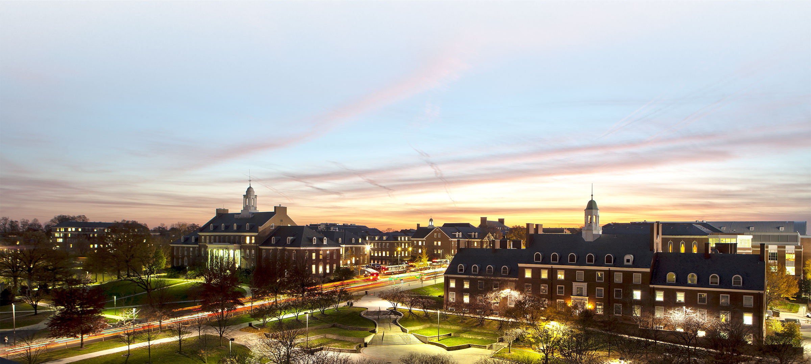
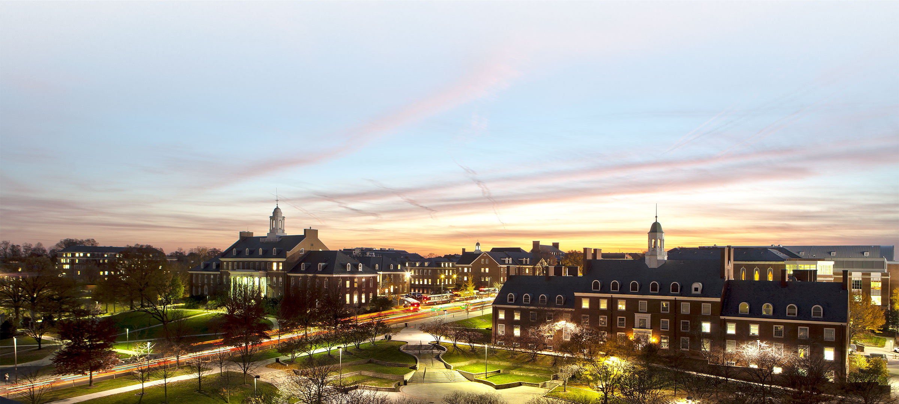
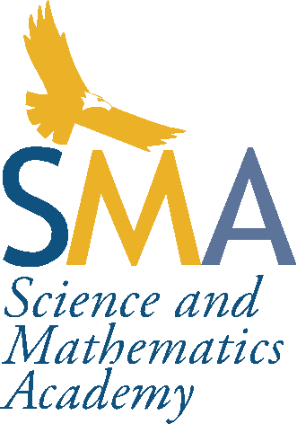

About Me
Links
Skills
- Java
- Python
- C
- Ruby, OCaml, Rust
- HTML, CSS, JavaScript
- PostgreSQL
- Unix
- Microsoft Office
Contact Information
- coledrum@terpmail.umd.edu
- coledrumgoole3@gmail.com
Timeline
11/2023 Webpage Creation
01/2022 Member of Alpha Lambda Delta Honor Society
08/2021 Enrolled in University of Maryland in University Honors
06/2021 High School Graduation
05/2021 Senior Capstone Project Completed
08/2017 Enrolled in SMA

My name is Cole Drumgoole, and I am currently a junior at the University of Maryland, College Park. I am a
computer
science major with a specialization in the general track, and pursuing a minor in general business.
I have a cumulative GPA of 3.723 and have 84 cumulative completed credits. In addition to being a student enrolled at
UMD, I am also a part of the Honors College in the
University Honors Program, and have been a member of the
Alpha
Lambda Delta Honor Society since Spring 2022.
Education

University of Maryland, College Park | 2021 - Present
Major: Computer Science
Minor: General Business
Cumulative GPA: 3.723
Expected Graduation Date: May 2025
As a part of the Computer Science curriculum, I have taken Object-Oriented Programming, Introduction to Computer
Systems, Discrete Structures, Organization of Programming Languages, Algorithms, Advanced Data Structures, and Web
Development with JavaScript.
Prospective courses I currently plan to take include Introduction to Artificial Intelligence and Data Science. As a student
in the General track specialization, I get to explore many different topics within the field.
University Honors, Honors College at UMD | 2021 - Present
When I was offered acceptance into the Honors College at the University of Maryland, I chose to pursue my Honors citation
within the University Honors program, as I felt it was most well-suited to my academic interests.
Within the University Honors program, I have completed a 15-credit curriculum consisting of insightful seminars and thematic
clusters concerned with a single topic of contemporary and enduring significance to earn my citation. Some of these courses
include Identity, Places, and Spaces: The Study of Intersectionality, The Study of Masculinity in Society, Arbitrating Our Bodily
Rights: What it Means to Consent, and Body Boundaries: The Science Behind Asexuality, Coloniality, and Immortality.

Science and Mathematics Academy | 2017 - 2021
Cumulative GPA: 4.0
Academic Focus: Science, Technology, Engineering, and Mathematics (STEM)
Educational Achievement: High School Diploma
I attended high school at the Science and Mathematics Academy at Aberdeen High School. This is a magnet program from my
county's school system that focuses on the integration science, technology, engineering, and mathematics (STEM) into
education. This program built the foundation for my technical knowledge and was the reason I pursued computer science in
college.
As a part of my senior year capstone project, I was involved in mentored research that focused on evaluating the effect of
enzyme-reactivator ratio on different species affected by a nerve agent. The completed poster for this project can be seen
in the Projects section below.